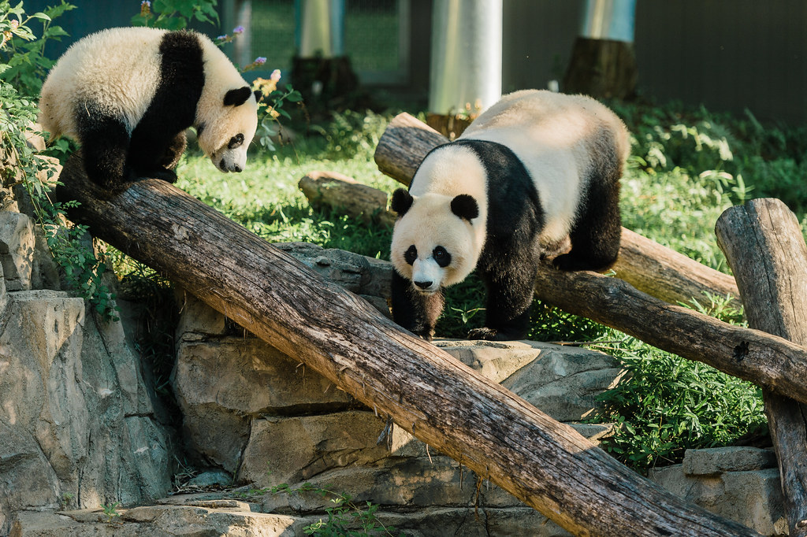
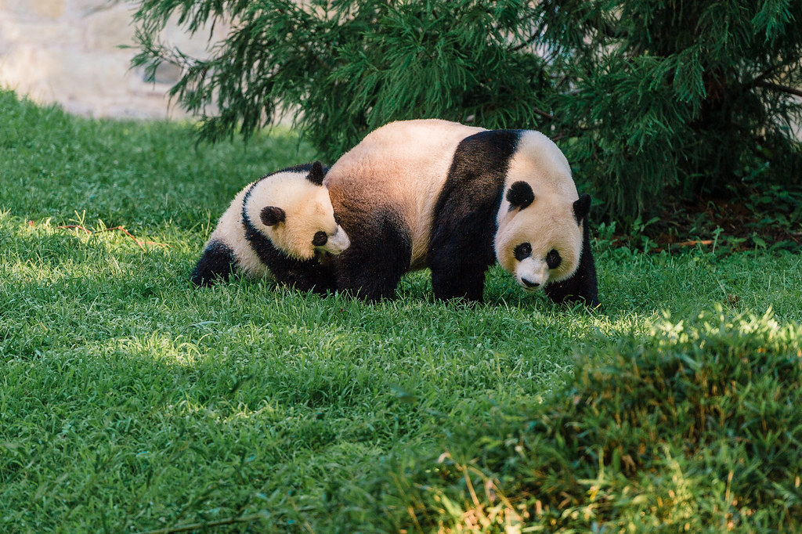
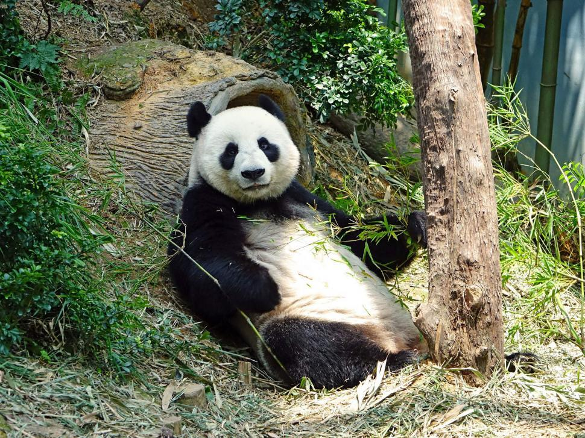
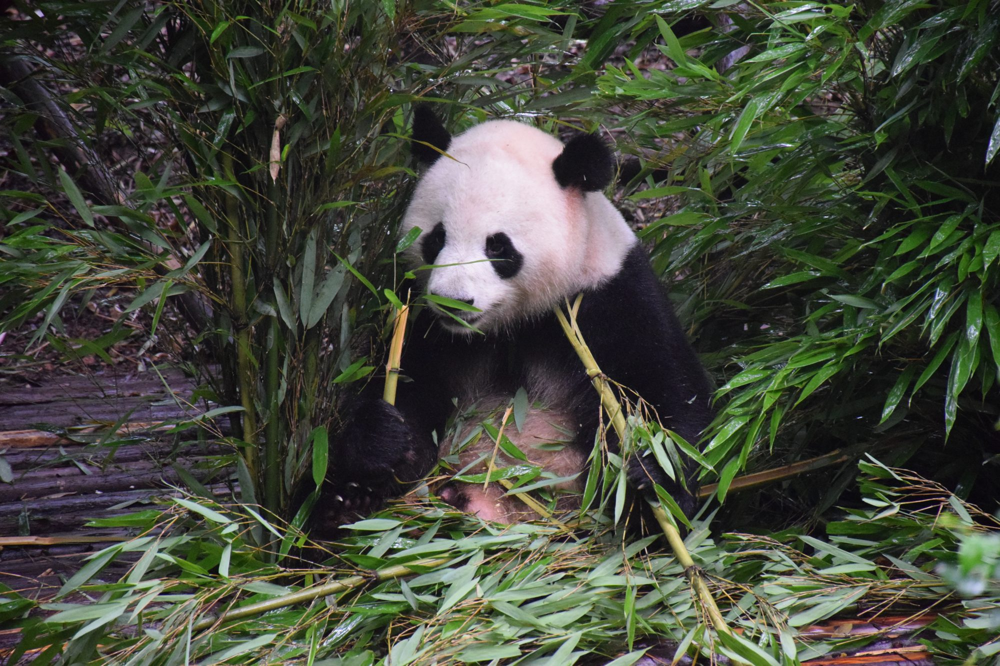
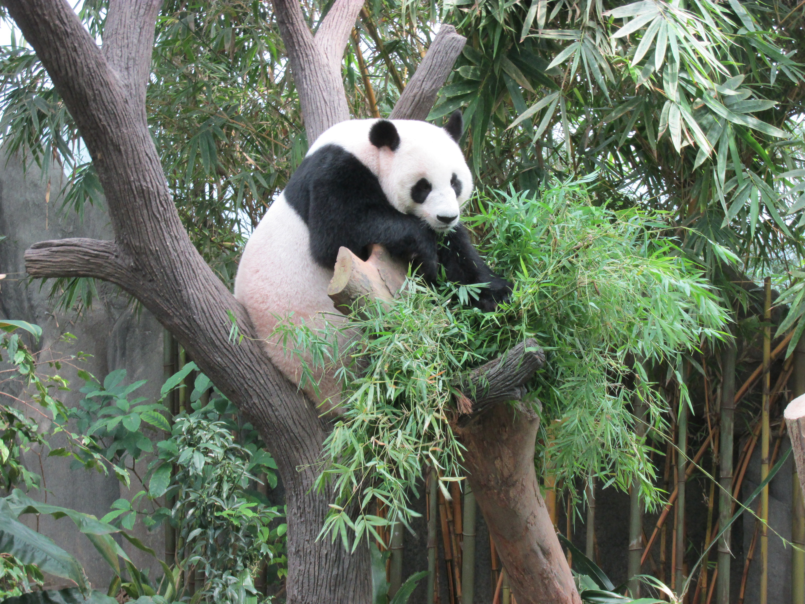
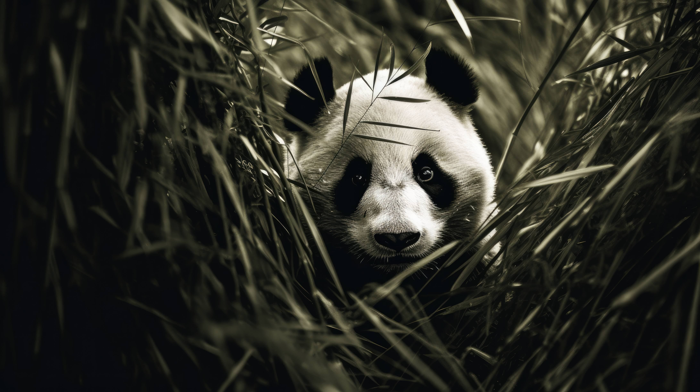
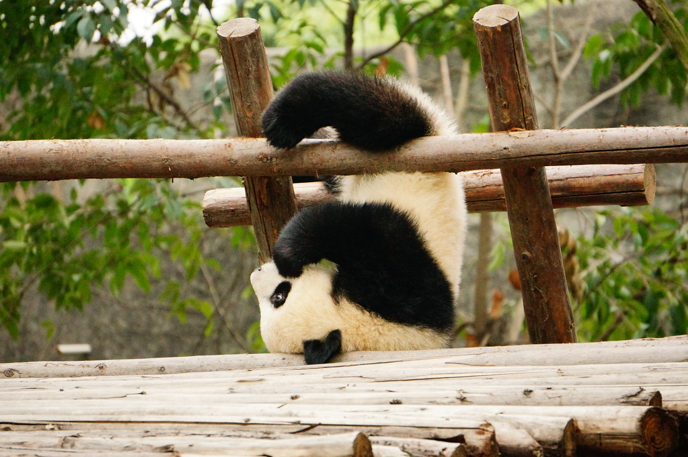

|  |  |
|  |
The giant panda (aka the Ailuropoda melanoleuca) is a fascinating and adorable bear species that captures the hearts of people around the world. They are easily recognizable due to their unique black and white fur. They have a heavily built body, round face, and large black patches around their eyes. Adult pandas can grow up to 6 feet long and weight around 200-300 pounds.
Giant pandas mainly reside in the mountainous regions of China, specifically in dense bamboo forests. They can be found in the provinces of Shaanxi, Gansu, and Sichuan. The bamboo forests are a great place for these cute giant pands to feast on their favorite food, which is bamboo. They possess a specialized wrist bone that acts like a thumb, allowing them to hold and grasp bamboo shoots. With the help of this wrist bone, giant pandas can eat all the bamboo they like with ease.
|  |  |
|  |  |
Giant pandas are solitary animals, meaning that they prefer to spend time alone. They usually spend their days searching for food and eating bamboo, which can take up to 14 hours. While they are known to be slower creatures compared to other land animals, they are excellent climbers and proficient swimmers. (Wow!)
Giant Pandas were labeled as an endangered species in the past, with a total of only 1,000 pandas in a 1980s count. While they have been taken off the endangered species list, they are still classified as vulnerable by the International Union for Conservation of Nature (IUCN). However, their numbers have been increasing over the years due to effective conservation efforts. Hopefully, the giant panda species will one day be taken off the vulnerable list and thrive as an abundant species that will continue to live for a very long time.
*Do you want to know how to care for giant pandas? Then check out this page to learn more!*